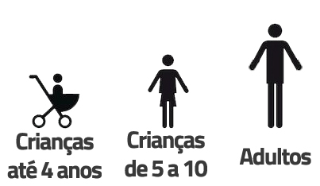

Roteiros dos parques

Legoland Florida
O Legoland é um dos parques mais novos da Florida. Inaugurado no final de 2011, o parque fica em Winter Heaven, uma cidade a 40 minutos de Orlando a caminho de Tampa, e tem como foco as crianças, em especial as menorzinhas.
O parque além de muito bonito, é enorme. Por ficar em uma área mais afastada, o Legoland tem um clima diferente dos outros parques de Orlando e as atrações ficam bem espalhadas. Isso significa que há muito espaço para andar entre um brinquedo e outro. Dentro do Legoland, está localizado o Legoland Water Park, o parque aquático do complexo que também foca nas crianças pequenas. Eu não recomendo ir até Winter Heaven só para visitar o Water Park, pois os outros parques aquáticos de Orlando são bem mais divertidos e completos, na minha opinião. De qualquer forma, se você já estiver planejando visitar o Legoland, poderá considerar as atrações aquáticas em sua programação também.
DICAS GERAIS SOBRE O LEGOLAND
- Reserve um dia inteiro para o parque
Por ficar mais afastado de Orlando, o Legoland é um daqueles parques que vale a pena passar o dia todo. Sei que algumas pessoas tem poucos dias para visitar os parques, mas a minha recomendação é escolher quais você mais deseja conhecer e aproveitá-los bem. Dividir o Legoland com outro parque não é uma boa idéia e provavelmente resultaria no baixo aproveitamento de ambos os parques visitados. O único parque que recomendo dividir com o Legoland é o parque aquático que fica dentro/ao lado dele (dois dias para estes dois parques seria tempo demais).
– Não vá sem a criançada
Como disse acima, o Legoland é um parque feito para as crianças entre 2 e 12 anos e eu pessoalmente acho que é focado nas crianças menores, de até 10 anos no máximo. Por esse motivo, não existem atrações “radicais” lá dentro. Conversei com alguns adultos que decidiram ir sem filhos e todos acharam o parque bonito, porém chatinho. Então a não ser que você seja um aficionado por Lego, não recomendamos o Legoland para grupos sem crianças pequenas.
- Compre o ingresso online
Já falamos isso na página sobre ingressos aqui do Vai Pra Disney, mas vale a pena destacar mais uma vez: para o Legoland, compensa comprar o ingresso online. Fazendo isso e agendando a data da visita, você consegue comprar o ingresso com até 20% de desconto. Além disso, o Legoland é o único parque que dá desconto para pessoas acima de 60 anos e crianças de 3 a 12 anos (nos outros parques de Orlando, se paga mais barato somente para crianças até 9 anos). Crianças com 2 anos de idade ou menores, não pagam entrada.
- Transporte até parque
Para quem não quer ir dirigindo até Winter Heaven, o Legoland disponibiliza ônibus que saem da International Drive (I-Drive 360) às 9 da manhã e retornam assim que o parque fecha. O ônibus custa $5 dólares (ida e volta) e é pago diretamente no embarque. Uma opção bem prática e em conta para quem não quer pegar o carro.
- Legoland Hotel
Em 2015 o Legoland vai inaugurar um hotel, logo ao lado da entrada do parque. Apesar de ficar distante de Orlando, com certeza eles trarão uma experiência bem legal de se hospedar dentro de um hotel completamente tematizado de Lego. Talvez seja uma opção pouco prática para toda a duração da viagem, mas pode ser uma boa alternativa para se passar uma ou duas noites para as crianças aproveitarem toda a estrutura.
- Estrutura de Roteiro Diferente
Se você já viu algum outro roteiro do Vai pra Disney, sabe que dividimos as atrações dos parques em 3 categorias: “Imperdíveis”, “Se sobrar tempo” e “Não Recomendo”. Para o Legoland, acreditamos que essa classificação não faria sentido, pois as atrações são muito segmentadas para grupos distintos de pessoas. O que é “imperdível” para uma criança de 3 anos não será imperdível para uma criança de 7 e muito menos para adultos. Depois de quebrar muito a cabeça a respeito da melhor forma de estruturar este roteiro, decidimos dividir as atrações de acordo com a sua recomendação para 3 grupos:
- Crianças de 0-4 anos
- Crianças de 5 a 10 anos
- Adultos
Cada um desses grupos será representado por um dos ícones abaixo, e toda vez que você encontrar este ícone ao lado de uma atração do roteiro pintado de vermelho, significa que esta atração é recomendada para este determinado grupo de pessoas.

ROTEIRO DO LEGOLAND FLORIDA
1. THE BEGINNING
Essa é a área de entrada do parque e além de algumas lojas e um grande restaurante, possui apenas uma atração:
- Island in the Sky : essa é uma torre de 46 metros de altura, em que uma plataforma circular rotaciona vagarosamente enquanto sobe até o topo. Nela você tem uma visão espetacular de todo o entorno do parque. Na minha opinião é imperdível como um dos melhores mirantes da região.
 FOOD TIP
FOOD TIP
Fica na entrada do parque a melhor lanchonete do parque, na minha opinião. O Market Restaurant tem de tudo um pouco: sanduíches, saladas e pratos com mais sustância. Os preços tendem a ser melhor do que nos parques maiores de Orlando. E aproveite que tem uma cafeteria bem gostosa no canto do restaurante.
2. FUN TOWN
- Wells Fargo Fun Town 4D Theater : um cinema 4D bem divertido onde são exibidos 3 filmes diferentes ao longo do dia. Lembrando que a programação pode mudar.
- The Grand Carousel : é um carrossel que tirando o fato de ser de dois andares, não faz nada além de girar. Se suas crianças curtem, vale a pena, senão, siga em frente para a próxima região.
- Lego Factory : não sei se eu que sou nerd demais ou se todo mundo vai gostar dessa atração, mas o fato é que eu achei bem interessante. Na Factory Tour, você faz um passeio pela produção do Lego da fábrica até chegar nas lojas. Vale dizer que apesar de bem ilustrativo, o passeio é todo em inglês o que dificulta o aproveitamento dos menorzinhos. Ah e não se preocupe que é um processo de fabricação “de mentirinha” e super seguro. Não é como se eles fossem colocar as máquinas de lego de verdade lá não.
3. DUPLO VALLEY
Essa região é dedicada as crianças bem pequenas, de até 4 anos. Ela é inspirada na linha da Lego para as crianças menores, chamada de Duplo.
- Duplo Farm : um playground coberto para as crianças poderem montar os Duplos
- Duplo Train : essa atração é um trenzinho que dá volta pela fazendinha de Lego.
- Duplo Tractor : bem parecido com o de cima, mas ao invés de ser em um trem, roda em cima de um tratorzinho.
- Duplo Splash & Play : um playground com água para as crianças se divertirem nos dias de calor.
- Duplo Tot Spot : outro parquinho, mas dessa vez para as crianças ainda menores (abaixo de 2 anos) brincarem com os Duplo em segurança.
4. WORLD OF CHIMA
A mais nova região do Legoland, é inspirada na série Legends of Chima que passa no Cartoon Network. Sendo bem sincero eu não conhecia, mas deu pra perceber que o negócio é popular pois aqui estava uma das maiores filas no dia que fomos ao parque.
- The Quest for Chi : nessa popular atração, as pessoas entram em um barquinho que começa passeando por cenários relacionados a série e depois tem que atirar água nos “bichos” que ficam do lado de fora. Prepare-se para sair molhado do brinquedo e evite ir nos dias de frio.
- Cragger’s Swamp : mais um daqueles playgrounds cheios de água para as crianças ficarem se molhando. Que criança não curte isso? Você pode fazer uma atração super sofisticada e dificilmente ela vai superar o brinquedo que molha a criançada.
- Speedorz Arena : nesse local, que mal é uma atração em si, as crianças podem disputar corridas com “carrinhos” de Lego.
5. LEGO KINGDOMS
Essa área de tema medieval reserva a primeira montanha russa do Legoland – para crianças, é claro!
- The Dragon : uma montanha russa que tem partes ao ar livre e partes em um ambiente fechado. A atração é bem popular por lá, então se prepare para pegar filas de até 1h.
- Royal Joust : a criança monta em um cavalinho que dá a volta em um circuito por “cenários medievais”. Atração para os bem pequenos.
- Merlin’s Challenge : outra atração em que os carrinhos giram em torno de um eixo para os mais baixinhos.
- The Forestmen’s Hideout : uma “árvore” onde as crianças podem escalar. Um playground muito divertido. Pena que eu não podia entrar! hehe
6. LAND OF ADVENTURE
Essa área que, como o próprio nome diz, traz como tema “aventuras” passa por cenários desde o Egito Antigo e um parque de dinossauros.
- Lost Kingdom Adventure : outra popular atração do Legoland. Nela, você embarca em um carrinho e entra em diversos cenários de uma tumba egípcia. Cada pessoa é munida de um canhão e deve atirar nos “vilões” da atração. Para cada acerto, a pessoa vai acumulando pontos e no final, ganha quem tiver feito mais.
- Beetle Bounce : sabe aquelas torres gigantes em que as pessoas despencam? Essa é a versão kids em que as crianças “despencam” de uma altura bem baixa.
- Coastersaurus : esta é a segunda montanha russa do Legoland e além de ser bem veloz, é feita de madeira (ou seja, sacode muito!). As crianças adoram!
- Pharaoh’s Revenge : esse brinquedo é engraçado e do tipo que eu passaria horas quando era pequeno. Os adultos e as crianças entram junto em um espaço em que cada um pode ficar atirando no outro a partir de canhões que são espalhados em formato de círculo.
- Safari Trek : essa atração é mais bobinha para os mais velhos, mas as crianças menores poderão gostar. Se trata de um caminhãozinho de safari que dá uma volta por animais feitos de Lego.
7. LEGO CITY
Pra mim essa é uma das regiões mais divertidas do Legoland, onde quase todas as atrações são imperdíveis na minha opinião.
- Rescue Academy : basicamente a família inteira entra em uma espécie de pátio com um carro de bombeiro virado para uns prédios. Quando o prédio começa a “pegar fogo” (de mentira), todo mundo tem que apagar o incêndio, cada um com a sua mangueira. Na teoria duas famílias competem ao mesmo tempo para ver quem vai apagar o incêndio primeiro.
- The Big Test : um show de acrobacias e dublês para ensinar como lidar com o fogo. O show é legal, mas a parte educacional fica meio de lado para quem não entende inglês.
- Ford Driving School : essa é outra atração que eu passaria horas se existisse quando eu fui pela primeira vez a Orlando. Nela a criança vai tirar uma “carteira de motorista”, passar por uma aula teórica (toda em inglês) e depois dirigir um carro “quase-de-verdade” sozinha. Obvio que tudo é feito com muita segurança, mas a sensação de dirigir sem ninguém do lado é uma aventura para as crianças. Esta atração só é permitida para crianças de 6 a 13 anos.
- Ford Jr. : atração parecida com a de cima, mas para crianças de 3 a 5 anos.
- Flying School : outra montanha russa do Legoland, mas dessa vez, suspensa.
- Boating School : se as crianças gostaram da experiência de pilotar os carrinhos nas atrações listadas acima, também vão gostar de pilotar os barcos do Boating School. E diferente das demais, nessa atração os adultos podem ir junto.
8. IMAGINATION ZONE
Tirando o Kid Power Towers, o Imagination Zone é uma área da Legoland muito usada por grupos escolares para passeios mais educativos. Muitas atrações aqui usam os Lego para explicar ciência e tecnologia. Por esse motivo, algumas atrações aqui podem ficar fechadas alguns dias do ano para uso exclusivo de grupos escolares- mas não se preocupe pois você não perde muita coisa não.
- Kid Power Towers : uma torre em que os pais e as crianças vão juntos. Os pais levam os banquinhos para o topo da torre (da-lhe força!) para ter uma visão panorâmica do parque. Depois é só curtir a queda, lentamente.
- Lego Mindstorms : um local onde as crianças podem montar Legos robotizados.
- Built & Test : bem parecido com a corrida de carrinhos de Lego que existe no começo do parque, mas aqui o tempo dos carrinhos é medido e depois comparado.
- Lego Hero Factory : outra área para as crianças montarem os seus Legos de maneira educativa.
9. LEGO TECHNIC
- AQUAZONE Wave Racers : essa atração é a releitura do carrossel normal, mas em cima de uma piscina. O legal desse carrossel é que o giro é bem rápido.
- Project X : essa é a montanha russa mais radical do parque, mas que todas as crianças curtem muito. Outra atração com filas que chegam a 1h de espera na alta temporada.
- Technicycle : essa atração é daquelas em que os carrinhos giram em torno de um eixo, mas para fazer o carrinho subir, as pessoas precisam que pedalar. Tem que ter força e disposição 
10. PIRATE’S COVE
- Live Water Ski Show : um show de dublês nas águas do rio Eloise. O show é bem legal e vale a pena assistir, fora que a paisagem é incrível. Me lembra muito de um show que existia na Sea World quando eu era pequeno, porém ao invés de belas moças esquiando na água, são grandes bonequinhos de Lego 
11. CYPRESS GARDENS
 TIRAR FOTOS
TIRAR FOTOS
- Cypress Gardens Botanical Gardens: esse jardim botânico já existia na região antes do parque ser construído, então o Legoland conservou o espaço, adicionando uns bonecos de Lego ali no meio. Rende boas fotos no fim da tarde, mas não tem nenhuma atração por ali.
12. MINILAND USA
Nessa área você encontra diversas réplicas de pontos turísticos famosos feitos de Lego: Nova York, Londres, Las Vegas, Miami, Washington e por ai vai. Além disso, também estão representandos ali os filmes do Star Wars, o que para mim é muito mais legal do que ver os pontos turísticos de Lego. São 6 cenas que representam os 6 filmes da saga. Eu sei que sou nerd, mas achei bem legal! 
13. LEGOLAND WATER PARK
O parque aquático da Legoland fica nos fundos do parque temático e exige o pagamento de uma valor a parte no ingresso normal (veja mais detalhes clicando aqui). Na minha opinião, apesar de ser bonito, é super simples. Os parques aquáticos da Disney dão de 10 x 0 no Legoland Water Park, pelo menos de acordo com o meu gosto – mas isso não se discute né?
Como eu disse no começo do roteiro, acho que reservar um dia todo para o parque aquático é muito, então se quiser ir, vale a pena separar algumas horas do dia da sua visita ao Legoland. As atrações são:
- Lego Wave Pool: piscina de ondas
- Twin Chasers: toboáguas
- Splash Out: toboáguas
- Joker Soaker: playground pra as crianças
- Build-A-Raft River: rio de correnteza
- Duplo Splash Safari: playground para as crianças
A julgar pelo pequeno número de atrações dá para você ver como é um parque simples mesmo, né? De qualquer forma, considerando o quanto as crianças adoram se molhar, você pode achar válido incluí-lo na sua programação no dia que visitar o Legoland e com certeza os pequenos vão se divertir por ali também.